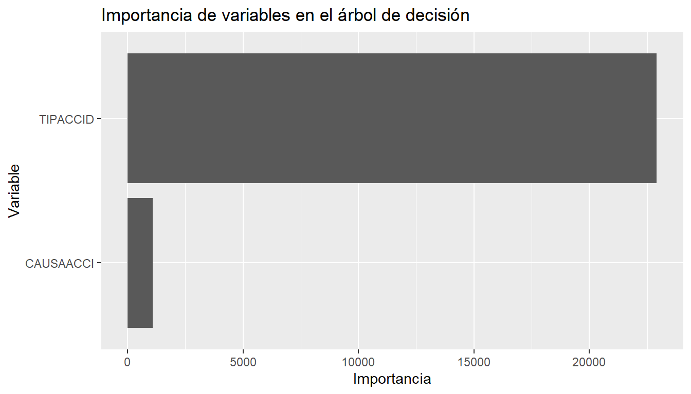
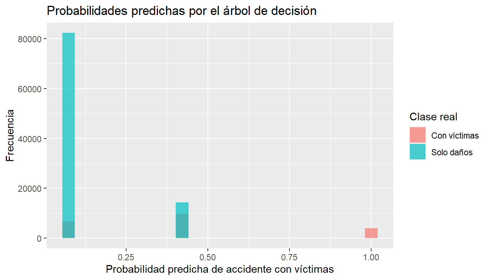

Al finalizar este capítulo, el lector será capaz de:
Explicar la idea básica de un árbol de decisión.
Interpretar reglas de clasificación tipo “si-entonces”.
Entrenar un árbol de decisión en R usando datos reales.
Generar predicciones sobre un conjunto de prueba.
Construir una matriz de confusión.
Calcular exactitud, sensibilidad y especificidad.
Comparar árboles de decisión con regresión logística y k-NN.
6.2 Introducción
Los árboles de decisión son modelos de aprendizaje supervisado que clasifican observaciones mediante una secuencia de preguntas.
En nuestro problema de accidentes de tránsito, un árbol puede formular preguntas como:
¿Cuál fue el tipo de accidente?
¿A qué hora ocurrió?
¿Cuál fue la causa presunta?
¿En qué día de la semana ocurrió?
Cada pregunta divide los datos en grupos más pequeños. Al final de cada camino, el árbol asigna una clase:
Con víctimas
Solo daños
La principal ventaja de los árboles de decisión es su interpretabilidad. Su estructura puede leerse como un conjunto de reglas.
6.3 Idea intuitiva
Un árbol de decisión se parece a un diagrama de flujo. Cada nodo interno contiene una pregunta, cada rama representa una respuesta posible y cada hoja contiene una predicción.
Código
reglas_ejemplo <-data.frame(pregunta =c("¿El accidente fue con peatón?","¿La hora fue nocturna?","¿La causa presunta fue el conductor?" ),posible_decision =c("Mayor riesgo de víctimas","Puede cambiar el nivel de riesgo","Analizar según tipo de accidente" ))reglas_ejemplo
pregunta posible_decision
1 ¿El accidente fue con peatón? Mayor riesgo de víctimas
2 ¿La hora fue nocturna? Puede cambiar el nivel de riesgo
3 ¿La causa presunta fue el conductor? Analizar según tipo de accidente
Interpretación del resultado.
La tabla muestra ejemplos de preguntas que un árbol podría usar para separar accidentes con víctimas de accidentes de solo daños.
6.4 Árboles como reglas si-entonces
Un árbol puede traducirse como reglas de decisión.
Si el tipo de accidente es colisión con peatón,
entonces puede aumentar la probabilidad de accidente con víctimas.
Si el accidente fue de solo daños en condiciones similares a muchos casos anteriores,
entonces el árbol puede clasificarlo como Solo daños.
Esta característica hace que los árboles sean útiles cuando se desea explicar el modelo a estudiantes, autoridades o personas no especialistas.
6.5 Fundamento matemático
Un árbol de decisión busca dividir los datos en grupos cada vez más homogéneos.
Si la variable respuesta tiene dos clases, podemos representarla como:
[ Y_i =
\[\begin{cases}
1, & \text{si el accidente tiene víctimas} \\
0, & \text{si el accidente es de solo daños}
\end{cases}\]
]
El árbol busca particiones donde las observaciones dentro de cada grupo sean lo más parecidas posible respecto a (Y).
Una medida común de impureza es el índice de Gini:
[ Gini = 1 - _{k=1}^{K} p_k^2 ]
donde (p_k) es la proporción de observaciones de la clase (k) dentro del nodo.
En clasificación binaria:
[ Gini = 1 - p_1^2 - p_2^2 ]
Si un nodo contiene observaciones de una sola clase, su impureza es baja. Si contiene una mezcla equilibrada de clases, su impureza es mayor.
6.6 Ejemplo sencillo del índice de Gini
Supongamos que un nodo contiene 80 accidentes de solo daños y 20 accidentes con víctimas.
Interpretación del resultado.
El índice de Gini mide qué tan mezcladas están las clases dentro de un nodo. Un valor cercano a cero indica mayor pureza.
6.7 Algoritmo general
Algoritmo: Árbol de decisión para clasificación
Entrada:
- Base de datos con variables predictoras
- Variable respuesta categórica
Proceso:
1. Elegir una variable para dividir los datos.
2. Seleccionar la división que produzca grupos más homogéneos.
3. Repetir el proceso en cada nuevo grupo.
4. Detener el crecimiento del árbol según ciertos criterios.
5. Asignar una clase a cada hoja.
6. Evaluar el modelo con datos de prueba.
Salida:
- Árbol entrenado
- Reglas de decisión
- Predicciones
- Métricas de evaluación
if (file.exists(ruta_atus_ml)) { atus_ml <-read_csv(ruta_atus_ml, show_col_types =FALSE)print("Base preparada cargada correctamente.")} else { atus_ml <-NULLprint("No se encontró el archivo datos/atus_ml_preparado.csv. Ejecuta primero el capítulo 2.")}
[1] "Base preparada cargada correctamente."
Interpretación del resultado.
Si aparece el mensaje de carga correcta, podemos continuar con el entrenamiento del árbol de decisión.
6.9 Uso de la base completa
En este capítulo usaremos la base completa preparada en capítulos anteriores. Para evitar que el árbol crezca demasiado, controlaremos su profundidad y el tamaño mínimo de los nodos.
Código
if (!is.null(atus_ml)) { atus_arbol_base <- atus_mldata.frame(filas =nrow(atus_arbol_base),columnas =ncol(atus_arbol_base) )}
filas columnas
1 390627 6
Interpretación del resultado.
La tabla muestra el número de registros y columnas disponibles para entrenar el modelo.
if (exists("atus_arbol_base")) {round(100*prop.table(table(atus_arbol_base$accidente_con_victimas)), 2)}
Con víctimas Solo daños
17.44 82.56
Interpretación del resultado.
La base está desbalanceada: la mayoría de los accidentes corresponden a solo daños. Por eso es importante revisar sensibilidad y especificidad, no solamente exactitud.
Interpretación del resultado.
El conjunto de entrenamiento se usa para construir el árbol. El conjunto de prueba se usa para evaluar el desempeño con datos no usados durante el entrenamiento.
6.12 Ajustar el árbol de decisión
Aunque usamos toda la base, limitamos el crecimiento del árbol para evitar sobreajuste y para facilitar la generación del libro en HTML y PDF.
n= 273439
node), split, n, loss, yval, (yprob)
* denotes terminal node
1) root 273439 47604 Solo daños (0.17409367 0.82590633)
2) TIPACCID=Caída de pasajero,Colisión con animal,Colisión con ciclista,Colisión con motocicleta,Colisión con peatón (atropellamiento),Volcadura 65214 32125 Solo daños (0.49260895 0.50739105)
4) TIPACCID=Caída de pasajero,Colisión con peatón (atropellamiento) 9240 0 Con víctimas (1.00000000 0.00000000) *
5) TIPACCID=Colisión con animal,Colisión con ciclista,Colisión con motocicleta,Volcadura 55974 22885 Solo daños (0.40885054 0.59114946) *
3) TIPACCID=Certificado cero,Colisión con ferrocarril,Colisión con objeto fijo,Colisión con vehículo automotor,Incendio,Otro,Salida del camino 208225 15479 Solo daños (0.07433786 0.92566214) *
Interpretación del resultado.
El modelo muestra las divisiones principales del árbol. Cada división representa una pregunta que ayuda a separar las clases.
6.13 Tabla de complejidad
Código
if (exists("modelo_arbol")) {printcp(modelo_arbol)}
Interpretación del resultado.
La tabla de complejidad resume el tamaño del árbol y el error relativo asociado. Es útil para decidir si conviene podar el árbol.
6.14 Importancia de variables
Código
if (exists("modelo_arbol")) { importancia <- modelo_arbol$variable.importanceif (!is.null(importancia)) { importancia_df <-data.frame(variable =names(importancia),importancia =as.numeric(importancia),row.names =NULL ) importancia_df <- importancia_df[order(-importancia_df$importancia), ] importancia_df }}
variable importancia
1 TIPACCID 22919.330
2 CAUSAACCI 1093.984
Código
if (exists("importancia_df")) {ggplot(importancia_df, aes(x =reorder(variable, importancia), y = importancia)) +geom_col() +coord_flip() +labs(title ="Importancia de variables en el árbol de decisión",x ="Variable",y ="Importancia" )}

Interpretación del resultado.
Las variables con mayor importancia son las que más ayudan al árbol a separar accidentes con víctimas de accidentes de solo daños.
6.15 Gráfica del árbol como código opcional
La gráfica completa de un árbol puede ser pesada para PDF cuando se trabaja con muchos datos. Por eso se deja como código opcional. El estudiante puede ejecutarlo en RStudio si desea visualizar el árbol.
Interpretación del resultado.
La gráfica del árbol permite observar los nodos y reglas principales, pero en documentos PDF grandes puede volver lenta la compilación.
6.16 Resumen seguro de nodos del árbol
En lugar de usar dplyr directamente sobre la estructura interna del árbol, convertimos el marco del árbol a un data.frame normal. Esto evita errores al generar HTML o PDF.
Interpretación del resultado.
La tabla muestra los primeros nodos del árbol. La columna var indica la variable usada para dividir; cuando aparece <leaf>, se trata de una hoja final.
Interpretación del resultado.
La exactitud mide la proporción total de clasificaciones correctas. La sensibilidad mide qué proporción de accidentes con víctimas fueron detectados correctamente. La especificidad mide qué proporción de accidentes de solo daños fueron detectados correctamente.
6.20 Probabilidades predichas
Además de clases, el árbol puede producir probabilidades.
Interpretación del resultado.
Las probabilidades indican qué tan probable considera el árbol que cada observación pertenezca a cada clase.
6.21 Distribución de probabilidades para accidentes con víctimas
Código
if (exists("probabilidades_arbol")) { prueba$probabilidad_con_victimas <- probabilidades_arbol[, "Con víctimas"]ggplot(prueba, aes(x = probabilidad_con_victimas, fill = accidente_con_victimas)) +geom_histogram(bins =25, alpha =0.7, position ="identity") +labs(title ="Probabilidades predichas por el árbol de decisión",x ="Probabilidad predicha de accidente con víctimas",y ="Frecuencia",fill ="Clase real" )}

Interpretación del resultado.
La gráfica permite observar cómo el árbol distribuye las probabilidades predichas para cada clase real.
6.22 Comparación conceptual con otros métodos
Aspecto
Regresión logística
k-NN
Árbol de decisión
Tipo de modelo
Paramétrico
No paramétrico
No paramétrico
Interpretabilidad
Alta
Media o baja
Alta
Usa distancias
No
Sí
No
Requiere escalamiento
No siempre
Sí
No
Produce reglas explícitas
Parcialmente
No
Sí
Maneja no linealidad
Limitado
Sí
Sí
6.23 Ventajas y desventajas
6.23.1 Ventajas
Son fáciles de explicar.
Generan reglas claras.
No requieren estandarizar variables.
Pueden manejar relaciones no lineales.
Funcionan con variables numéricas y categóricas.
6.23.2 Desventajas
Pueden sobreajustarse si crecen demasiado.
Pequeños cambios en los datos pueden modificar la estructura del árbol.
Un solo árbol puede tener menor desempeño que métodos de ensamble como Random Forest.
6.24 Conclusión
Los árboles de decisión son modelos intuitivos, visuales e interpretables. Permiten clasificar observaciones mediante reglas tipo “si-entonces”.
En este capítulo usamos un árbol de decisión para clasificar accidentes de tránsito según la presencia de víctimas. También calculamos una matriz de confusión y métricas de evaluación.
Este capítulo prepara el camino para estudiar modelos más potentes basados en muchos árboles, como Random Forest.
Ejecutar el código
# Árboles de decisión para clasificación## Objetivos del capítuloAl finalizar este capítulo, el lector será capaz de:- Explicar la idea básica de un árbol de decisión.- Interpretar reglas de clasificación tipo “si-entonces”.- Entrenar un árbol de decisión en R usando datos reales.- Generar predicciones sobre un conjunto de prueba.- Construir una matriz de confusión.- Calcular exactitud, sensibilidad y especificidad.- Comparar árboles de decisión con regresión logística y k-NN.## IntroducciónLos árboles de decisión son modelos de aprendizaje supervisado que clasifican observaciones mediante una secuencia de preguntas.En nuestro problema de accidentes de tránsito, un árbol puede formular preguntas como:- ¿Cuál fue el tipo de accidente?- ¿A qué hora ocurrió?- ¿Cuál fue la causa presunta?- ¿En qué día de la semana ocurrió?Cada pregunta divide los datos en grupos más pequeños. Al final de cada camino, el árbol asigna una clase:- `Con víctimas`- `Solo daños`La principal ventaja de los árboles de decisión es su interpretabilidad. Su estructura puede leerse como un conjunto de reglas.## Idea intuitivaUn árbol de decisión se parece a un diagrama de flujo. Cada nodo interno contiene una pregunta, cada rama representa una respuesta posible y cada hoja contiene una predicción.```{r}reglas_ejemplo <-data.frame(pregunta =c("¿El accidente fue con peatón?","¿La hora fue nocturna?","¿La causa presunta fue el conductor?" ),posible_decision =c("Mayor riesgo de víctimas","Puede cambiar el nivel de riesgo","Analizar según tipo de accidente" ))reglas_ejemplo```**Interpretación del resultado.** La tabla muestra ejemplos de preguntas que un árbol podría usar para separar accidentes con víctimas de accidentes de solo daños.## Árboles como reglas si-entoncesUn árbol puede traducirse como reglas de decisión.```textSi el tipo de accidente es colisión con peatón,entonces puede aumentar la probabilidad de accidente con víctimas.Si el accidente fue de solo daños en condiciones similares a muchos casos anteriores,entonces el árbol puede clasificarlo como Solo daños.```Esta característica hace que los árboles sean útiles cuando se desea explicar el modelo a estudiantes, autoridades o personas no especialistas.## Fundamento matemáticoUn árbol de decisión busca dividir los datos en grupos cada vez más homogéneos.Si la variable respuesta tiene dos clases, podemos representarla como:\[Y_i =\begin{cases}1, & \text{si el accidente tiene víctimas} \\0, & \text{si el accidente es de solo daños}\end{cases}\]El árbol busca particiones donde las observaciones dentro de cada grupo sean lo más parecidas posible respecto a \(Y\).Una medida común de impureza es el índice de Gini:\[Gini = 1 - \sum_{k=1}^{K} p_k^2\]donde \(p_k\) es la proporción de observaciones de la clase \(k\) dentro del nodo.En clasificación binaria:\[Gini = 1 - p_1^2 - p_2^2\]Si un nodo contiene observaciones de una sola clase, su impureza es baja. Si contiene una mezcla equilibrada de clases, su impureza es mayor.## Ejemplo sencillo del índice de GiniSupongamos que un nodo contiene 80 accidentes de solo daños y 20 accidentes con víctimas.```{r}p_solo_danios <-80/100p_con_victimas <-20/100gini <-1- p_solo_danios^2- p_con_victimas^2gini```**Interpretación del resultado.** El índice de Gini mide qué tan mezcladas están las clases dentro de un nodo. Un valor cercano a cero indica mayor pureza.## Algoritmo general```textAlgoritmo: Árbol de decisión para clasificaciónEntrada:- Base de datos con variables predictoras- Variable respuesta categóricaProceso:1. Elegir una variable para dividir los datos.2. Seleccionar la división que produzca grupos más homogéneos.3. Repetir el proceso en cada nuevo grupo.4. Detener el crecimiento del árbol según ciertos criterios.5. Asignar una clase a cada hoja.6. Evaluar el modelo con datos de prueba.Salida:- Árbol entrenado- Reglas de decisión- Predicciones- Métricas de evaluación```## Cargar paquetes y datos```{r}library(readr)library(dplyr)library(ggplot2)library(rpart)``````{r}ruta_atus_ml <-"datos/atus_ml_preparado.csv"file.exists(ruta_atus_ml)``````{r}if (file.exists(ruta_atus_ml)) { atus_ml <-read_csv(ruta_atus_ml, show_col_types =FALSE)print("Base preparada cargada correctamente.")} else { atus_ml <-NULLprint("No se encontró el archivo datos/atus_ml_preparado.csv. Ejecuta primero el capítulo 2.")}```**Interpretación del resultado.** Si aparece el mensaje de carga correcta, podemos continuar con el entrenamiento del árbol de decisión.## Uso de la base completaEn este capítulo usaremos la base completa preparada en capítulos anteriores. Para evitar que el árbol crezca demasiado, controlaremos su profundidad y el tamaño mínimo de los nodos.```{r}if (!is.null(atus_ml)) { atus_arbol_base <- atus_mldata.frame(filas =nrow(atus_arbol_base),columnas =ncol(atus_arbol_base) )}```**Interpretación del resultado.** La tabla muestra el número de registros y columnas disponibles para entrenar el modelo.## Preparar variables```{r}if (exists("atus_arbol_base")) { atus_arbol_base <- atus_arbol_base |>mutate(accidente_con_victimas =factor( accidente_con_victimas,levels =c("Con víctimas", "Solo daños") ),MES =as.factor(MES),ID_HORA =as.numeric(ID_HORA),DIASEMANA =as.factor(DIASEMANA),TIPACCID =as.factor(TIPACCID),CAUSAACCI =as.factor(CAUSAACCI) ) |>na.omit()table(atus_arbol_base$accidente_con_victimas)}``````{r}if (exists("atus_arbol_base")) {round(100*prop.table(table(atus_arbol_base$accidente_con_victimas)), 2)}```**Interpretación del resultado.** La base está desbalanceada: la mayoría de los accidentes corresponden a solo daños. Por eso es importante revisar sensibilidad y especificidad, no solamente exactitud.## División en entrenamiento y prueba```{r}if (exists("atus_arbol_base")) {set.seed(123) n <-nrow(atus_arbol_base) indices_entrenamiento <-sample(1:n, size =round(0.7* n)) entrenamiento <- atus_arbol_base[indices_entrenamiento, ] prueba <- atus_arbol_base[-indices_entrenamiento, ]data.frame(conjunto =c("Entrenamiento", "Prueba"),registros =c(nrow(entrenamiento), nrow(prueba)),porcentaje =c(round(100*nrow(entrenamiento) /nrow(atus_arbol_base), 2),round(100*nrow(prueba) /nrow(atus_arbol_base), 2) ) )}```**Interpretación del resultado.** El conjunto de entrenamiento se usa para construir el árbol. El conjunto de prueba se usa para evaluar el desempeño con datos no usados durante el entrenamiento.## Ajustar el árbol de decisiónAunque usamos toda la base, limitamos el crecimiento del árbol para evitar sobreajuste y para facilitar la generación del libro en HTML y PDF.```{r}if (exists("entrenamiento")) { modelo_arbol <-rpart( accidente_con_victimas ~ MES + ID_HORA + DIASEMANA + TIPACCID + CAUSAACCI,data = entrenamiento,method ="class",control =rpart.control(cp =0.005,minsplit =1000,minbucket =300,maxdepth =5 ) )}``````{r}if (exists("modelo_arbol")) {print(modelo_arbol)}```**Interpretación del resultado.** El modelo muestra las divisiones principales del árbol. Cada división representa una pregunta que ayuda a separar las clases.## Tabla de complejidad```{r}if (exists("modelo_arbol")) {printcp(modelo_arbol)}```**Interpretación del resultado.** La tabla de complejidad resume el tamaño del árbol y el error relativo asociado. Es útil para decidir si conviene podar el árbol.## Importancia de variables```{r}if (exists("modelo_arbol")) { importancia <- modelo_arbol$variable.importanceif (!is.null(importancia)) { importancia_df <-data.frame(variable =names(importancia),importancia =as.numeric(importancia),row.names =NULL ) importancia_df <- importancia_df[order(-importancia_df$importancia), ] importancia_df }}``````{r, fig.width=7, fig.height=4}if (exists("importancia_df")) {ggplot(importancia_df, aes(x =reorder(variable, importancia), y = importancia)) +geom_col() +coord_flip() +labs(title ="Importancia de variables en el árbol de decisión",x ="Variable",y ="Importancia" )}```**Interpretación del resultado.** Las variables con mayor importancia son las que más ayudan al árbol a separar accidentes con víctimas de accidentes de solo daños.## Gráfica del árbol como código opcionalLa gráfica completa de un árbol puede ser pesada para PDF cuando se trabaja con muchos datos. Por eso se deja como código opcional. El estudiante puede ejecutarlo en RStudio si desea visualizar el árbol.```{r eval=FALSE}plot(modelo_arbol, uniform =TRUE, margin =0.1)text(modelo_arbol, use.n =TRUE, cex =0.7)```**Interpretación del resultado.** La gráfica del árbol permite observar los nodos y reglas principales, pero en documentos PDF grandes puede volver lenta la compilación.## Resumen seguro de nodos del árbolEn lugar de usar `dplyr` directamente sobre la estructura interna del árbol, convertimos el marco del árbol a un `data.frame` normal. Esto evita errores al generar HTML o PDF.```{r}if (exists("modelo_arbol")) { resumen_nodos <-as.data.frame(modelo_arbol$frame) resumen_nodos$nodo <-row.names(resumen_nodos)row.names(resumen_nodos) <-NULL resumen_nodos <- resumen_nodos[, c("nodo", "var", "n", "dev", "yval")]head(resumen_nodos, 12)}```**Interpretación del resultado.** La tabla muestra los primeros nodos del árbol. La columna `var` indica la variable usada para dividir; cuando aparece `<leaf>`, se trata de una hoja final.## Predicción sobre el conjunto de prueba```{r}if (exists("modelo_arbol") &&exists("prueba")) { pred_arbol <-predict( modelo_arbol,newdata = prueba,type ="class" )head(pred_arbol)}```**Interpretación del resultado.** Cada valor predicho corresponde a la clase que el árbol asigna a una observación del conjunto de prueba.## Matriz de confusión```{r}if (exists("pred_arbol")) { pred_arbol <-factor(pred_arbol, levels =c("Con víctimas", "Solo daños")) real_arbol <-factor(prueba$accidente_con_victimas, levels =c("Con víctimas", "Solo daños")) matriz_confusion_arbol <-table(Real = real_arbol,Predicho = pred_arbol ) matriz_confusion_arbol}```**Interpretación del resultado.** La diagonal principal contiene los aciertos. Los valores fuera de la diagonal representan errores de clasificación.## Métricas de evaluación```{r}calcular_metricas_arbol <-function(real, predicho) { real <-factor(real, levels =c("Con víctimas", "Solo daños")) predicho <-factor(predicho, levels =c("Con víctimas", "Solo daños")) matriz <-table(Real = real, Predicho = predicho) VP <- matriz["Con víctimas", "Con víctimas"] FN <- matriz["Con víctimas", "Solo daños"] FP <- matriz["Solo daños", "Con víctimas"] VN <- matriz["Solo daños", "Solo daños"]data.frame(exactitud = (VP + VN) / (VP + FN + FP + VN),sensibilidad = VP / (VP + FN),especificidad = VN / (VN + FP) )}``````{r}if (exists("pred_arbol")) { metricas_arbol <-calcular_metricas_arbol(real_arbol, pred_arbol) metricas_arbol}```**Interpretación del resultado.** La exactitud mide la proporción total de clasificaciones correctas. La sensibilidad mide qué proporción de accidentes con víctimas fueron detectados correctamente. La especificidad mide qué proporción de accidentes de solo daños fueron detectados correctamente.## Probabilidades predichasAdemás de clases, el árbol puede producir probabilidades.```{r}if (exists("modelo_arbol") &&exists("prueba")) { probabilidades_arbol <-predict( modelo_arbol,newdata = prueba,type ="prob" )head(probabilidades_arbol)}```**Interpretación del resultado.** Las probabilidades indican qué tan probable considera el árbol que cada observación pertenezca a cada clase.## Distribución de probabilidades para accidentes con víctimas```{r, fig.width=7, fig.height=4}if (exists("probabilidades_arbol")) { prueba$probabilidad_con_victimas <- probabilidades_arbol[, "Con víctimas"]ggplot(prueba, aes(x = probabilidad_con_victimas, fill = accidente_con_victimas)) +geom_histogram(bins =25, alpha =0.7, position ="identity") +labs(title ="Probabilidades predichas por el árbol de decisión",x ="Probabilidad predicha de accidente con víctimas",y ="Frecuencia",fill ="Clase real" )}```**Interpretación del resultado.** La gráfica permite observar cómo el árbol distribuye las probabilidades predichas para cada clase real.## Comparación conceptual con otros métodos| Aspecto | Regresión logística | k-NN | Árbol de decisión ||---|---|---|---|| Tipo de modelo | Paramétrico | No paramétrico | No paramétrico || Interpretabilidad | Alta | Media o baja | Alta || Usa distancias | No | Sí | No || Requiere escalamiento | No siempre | Sí | No || Produce reglas explícitas | Parcialmente | No | Sí || Maneja no linealidad | Limitado | Sí | Sí |## Ventajas y desventajas### Ventajas- Son fáciles de explicar.- Generan reglas claras.- No requieren estandarizar variables.- Pueden manejar relaciones no lineales.- Funcionan con variables numéricas y categóricas.### Desventajas- Pueden sobreajustarse si crecen demasiado.- Pequeños cambios en los datos pueden modificar la estructura del árbol.- Un solo árbol puede tener menor desempeño que métodos de ensamble como Random Forest.## ConclusiónLos árboles de decisión son modelos intuitivos, visuales e interpretables. Permiten clasificar observaciones mediante reglas tipo “si-entonces”.En este capítulo usamos un árbol de decisión para clasificar accidentes de tránsito según la presencia de víctimas. También calculamos una matriz de confusión y métricas de evaluación.Este capítulo prepara el camino para estudiar modelos más potentes basados en muchos árboles, como Random Forest.